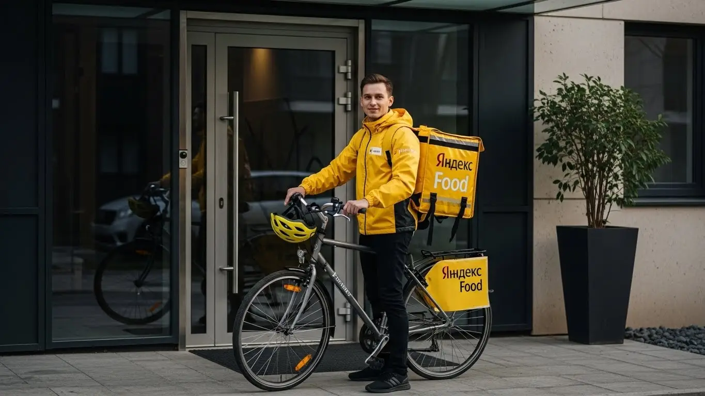
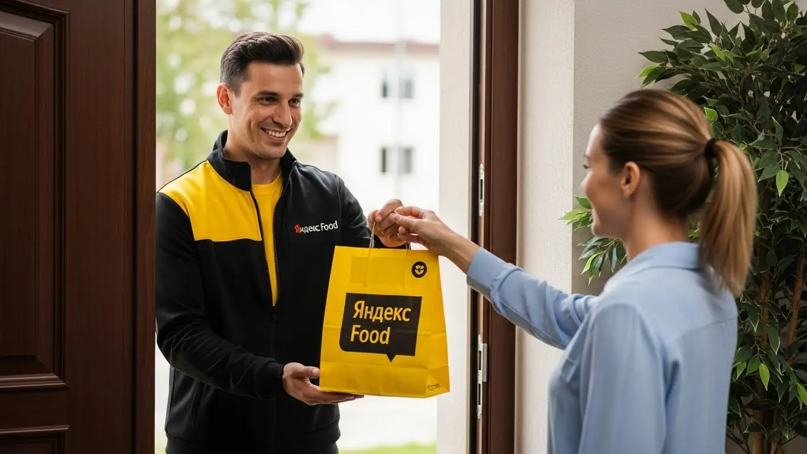
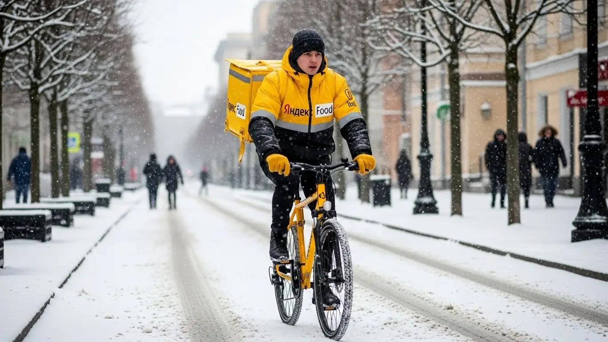
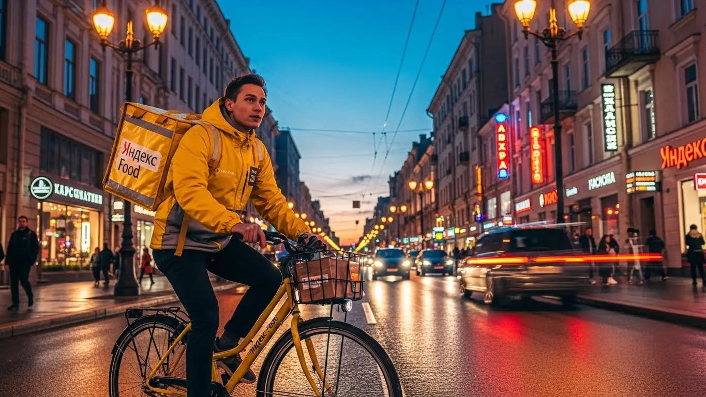
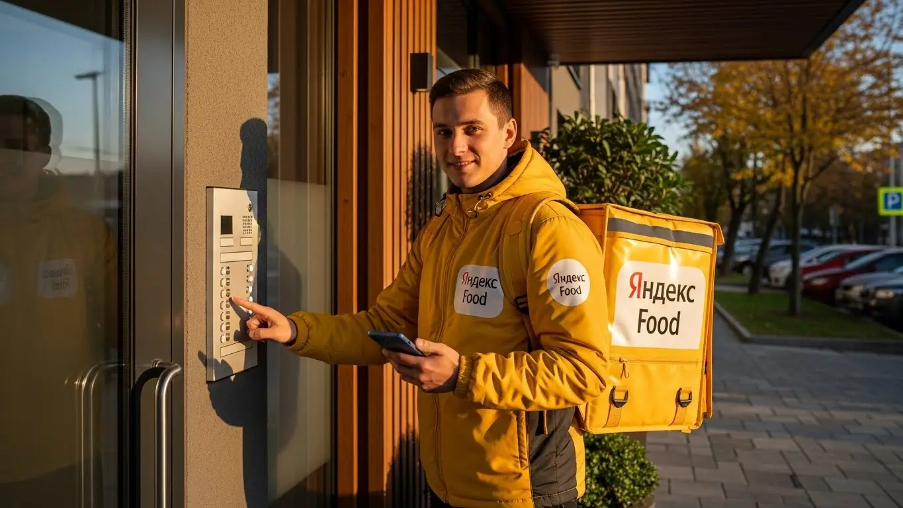

Работа курьером Яндекс Еды в Котельниках 2025-2026: доход и условия

- Работа курьером Яндекс Еды в Котельниках: для кого эта вакансия и что вы получите
- Сколько вы будете зарабатывать курьером в Котельниках: калькулятор дохода и разбор выплат
- Реальный заработок курьера в Котельниках: смены и месячный доход
- График работы и форматы занятости
- Требования к кандидату и документы
- Самозанятость, налоги и юридическая чистота
- Пошаговое оформление и первый выход на линию в Котельниках
- Пешком, на вело или на авто: что выгоднее в Котельниках
- Районы, маршруты и «топовые» зоны заказов в Котельниках
- Безопасность, страховка, штрафы и оплата простоя
- Плюсы и возможные минусы работы курьером в Котельниках
- Реальные истории и отзывы курьеров из Котельниках
- Ответы на главные вопросы о работе курьером Яндекс Еды в Котельниках
- Короткие ответы на главные вопросы
- Итоги и ваш следующий шаг
Все города
Думаешь, работа курьером в Котельниках — это просто врубил приложение и поехал грести деньги лопатой? Как бы не так. Тебя тоже терзают мысли, как не убить ноги, велик или подвеску машины на наших дорогах, не застрять насмерть в пробке у «МЕГИ» в час пик и не остаться с тремя сотнями в кармане после 10-часовой смены? Если да, то ты по адресу. Это не общая инструкция «для всех», а разбор полетов именно по нашим, котельниковским, улицам — от старого Силиката до новых ЖК.
Поверь, 9 из 10 новичков в Котельниках наступают на одни и те же грабли: смотрят на рекламные обещания, а потом сталкиваются с реальностью. С реальностью, где твой чистый доход — это не просто сумма за заказы, а то, что осталось после вычета расходов на бензин, налога для самозанятых и мелкого ремонта. Чтобы не гадать, а сразу увидеть актуальные цифры и требования, стоит изучить официальную страницу, где детально описана работа курьером Яндекс Еда в Котельниках — там есть и калькулятор, и форма для быстрой заявки. Где от твоего рейтинга и знания «хлебных» зон зависит, будешь ты возить дорогие заказы из ресторанов или мотаться за копейки с пакетиком из «Пятерочки».
Здесь мы без рекламной шелухи разберём, на чём выгоднее катать по Котельникам — пешком, на велике или авто. Посчитаем, сколько чистыми выходит в хороший и плохой день, и почему зимой можно заработать больше. Я покажу на карте, где самые «жирные» заказы в Яндекс Еде и Лавке, а какие районы лучше объезжать стороной. Расскажу, за что реально штрафуют, как погода влияет на спрос и почему работа в Котельниках — это совсем не то же самое, что в соседнем Люблино.
Меня зовут Алексей. Я не только сам откатал не одну тысячу километров по Котельникам с желтым рюкзаком, но и держу небольшой таксопарк-партнер, так что вижу всю эту кухню изнутри — и со стороны курьера, и со стороны системы. Никакой воды, только мясо и личный опыт. В общем, хватит болтовни. Давай по порядку, сейчас всё разложу по полочкам.
Прежде чем нырять в детали, давай быстро пробежимся по ключевым моментам. Это поможет сориентироваться в статье и сразу найти ответы на самые горячие вопросы.
Что ты точно узнаешь из этого разбора по Котельникам
В этой статье ты ТОЧНО узнаешь:
- Сколько реально можно заработать за смену в Котельниках, и от чего зависит итоговая сумма?
- Какие районы и зоны в Котельниках самые прибыльные, а где лучше не терять время?
- Что выгоднее в Котельниках: работать пешком, на велосипеде или на своей машине?
- Как совмещать доставку с учёбой или основной работой и какой график самый выгодный?
- Как устроена самозанятость, сколько платить налогов и сложно ли всё это оформить?
- За что реально штрафуют и понижают рейтинг, и как этого избежать?
А если тебе некогда читать всю статью — переходи сразу к заключению, где ты найдёшь короткие ответы на все эти вопросы и указания, в каких разделах искать подробности.
А вот наглядная инфографика, которая показывает основные цифры по работе в Котельниках.
Работа курьером в Котельниках: ключевые цифры
Работа курьером Яндекс Еды в Котельниках: для кого эта вакансия и что вы получите
Кому подойдёт эта работа в Котельниках
Давай начистоту: эта вакансия курьера не для всех, но для многих — настоящая находка. В первую очередь, это идеальная подработка для студентов. График можно подстроить под учёбу, выходить на пару часов после пар и иметь свои деньги на карманные расходы, не прося у родителей. Никакого строгого начальника, который будет отчитывать за опоздания на пять минут.
Также это отличная возможность для тех, кто ищет основной, но гибкий источник дохода. Если у тебя есть другая работа со сменным графиком, можно выходить на доставки в свои выходные. Если ты временно остался без заработка, работа курьером поможет быстро встать на ноги, ведь первые деньги приходят на карту уже после первой смены. Опыт здесь не нужен — всему научат за пару часов. Главное — желание двигаться и зарабатывать.
И, конечно, это отличная вакансия для водителей-курьеров на своем авто, которые хотят использовать свой автомобиль по максимуму. Заказов на машине всегда хватает, особенно на дальние расстояния, и платят за них больше. Если ты ценишь свободу, не любишь сидеть в офисе и хочешь, чтобы твой доход зависел напрямую от тебя, а не от настроения шефа, — тебе сюда.
Главные преимущества для жителей районов Белая Дача, Силикат, Южный
Главный плюс работы курьером в Котельниках — возможность доставлять заказы буквально в соседнем дворе. Тебе не нужно тратить по полтора часа на дорогу до «офиса». Живёшь, например, в микрорайоне Белая Дача — можешь начинать смену прямо оттуда, развозя заказы из ресторанов в ТРЦ «Мега». Огромное преимущество в том, что ты знаешь каждый закоулок и каждую тропинку, и это даёт тебе плюс в скорости.
То же самое касается и других районов. Если твой дом в микрорайоне Силикат или Южный, ты просто включаешь приложение Яндекс Про, выходишь из подъезда и начинаешь работать. Заказы из местных кафе, пиццерий и магазинов будут приходить тебе в первую очередь. Это экономит не только время и деньги на проезд, но и нервы. Ты работаешь на своей территории, где всё знакомо и понятно.
Краткое обещание по доходу и условиям
Если говорить о деньгах, то в Котельниках цифры вполне приличные. При частичной занятости, работая по 3–4 часа в день, можно спокойно заработать 1500–2500 рублей. Если же выходить на полную смену в 8–10 часов, то реальный доход курьера может достигать 3500–5000 рублей и выше, особенно в выходные или в плохую погоду, когда действуют повышенные коэффициенты. В месяц при полной занятости активные курьеры получают и 80 000, и 90 000 рублей.
Ключевые условия работы просты и прозрачны. Во-первых, свободный график — ты сам решаешь, когда и сколько работать. Во-вторых, ежедневные выплаты: заработал сегодня — получил деньги на карту сегодня же. В-третьих, начать можно без опыта, всему научат. От тебя требуется только смартфон на Android, статус самозанятого (оформляется онлайн за 10 минут) и желание работать.
Сколько вы будете зарабатывать курьером в Котельниках: калькулятор дохода и разбор выплат
Из чего складывается доход курьера
Твоя зарплата — это не просто фиксированная ставка, а конструктор из нескольких частей. Понимание этой системы поможет зарабатывать больше. Во-первых, это базовая оплата за каждый выполненный заказ, которая зависит от того, откуда и куда нужно доставить. Во-вторых, к ней добавляется доплата за расстояние — чем дальше везти, тем больше денег. Система всё считает автоматически, обмануть её не получится.
Кроме того, есть повышающие коэффициенты. В часы пик (обед, ужин), в выходные или в плохую погоду спрос на доставку резко растёт. В это время стоимость каждого заказа умножается на коэффициент, и твой доход может вырасти в полтора-два раза. Также существуют персональные бонусы за выполнение определённого количества заказов и чаевые от клиентов — они полностью твои. И ещё один плюс — оплата простоя, если ты на плановом слоте, а заказов мало, и возможная компенсация проезда.
Как пользоваться калькулятором дохода
Чтобы прикинуть свой потенциальный заработок, не нужно гадать на кофейной гуще. На сайте есть специальный калькулятор, и пользоваться им очень просто. Сначала выбираешь свой город — Котельники. Затем указываешь, как планируешь доставлять: пешком, на велосипеде или на своем авто.
Дальше самое интересное: ты двигаешь ползунки, выбирая, сколько часов в день и сколько дней в неделю готов работать. Например, 4 часа в день 5 дней в неделю как подработку или 8 часов 6 дней в неделю для полной занятости. Калькулятор тут же покажет примерный диапазон твоего дохода в день и в месяц. Это не стопроцентная гарантия, а ориентир, основанный на средних показателях по городу, но он даёт очень хорошее представление о том, на какие цифры можно рассчитывать.
Прикинь свой доход в Котельниках
Это ориентировочный расчёт на основе средней ставки в Котельниках (~500 ₽/час). Реальный доход зависит от спроса, бонусов и вашего рейтинга.
Чтобы увидеть самые актуальные условия и сразу заполнить анкету, загляни на официальную страницу про работу курьером Яндекс Еда в твоём городе — там всегда свежая информация и форма для быстрой заявки.
Примеры расчёта для пешего, вело- и авто‑курьера в Котельниках
Давай разберём на живых примерах.
Пеший курьер-студент. Работает по вечерам, с 18:00 до 22:00, в районе ТРЦ «Мега Белая Дача». Там много ресторанов, заказы короткие, в основном по жилым домам вокруг. За 4 часа он спокойно успевает сделать 8–10 доставок. С учётом вечернего спроса его средний заработок за смену составит около 1800–2200 рублей.
Велокурьер на полной занятости. Работает 8-часовую смену, выбирая для старта густонаселённые микрорайоны Силикат и Южный. Курьер на велосипеде быстрее пешего, поэтому берёт больше заказов и покрывает большие расстояния. В среднем за день он выполняет 15–20 заказов. Его дневной доход, особенно если поймать пару заказов с повышенным коэффициентом, будет в районе 3500–4000 рублей.
Водитель-курьер на своем авто. Выходит на линию в пиковые часы и в выходные. Он берёт самые выгодные заказы: доставка по всему городу, в соседние Люберцы или Дзержинский, крупные заказы из гипермаркета «Глобус». За 8–9 часов активной работы в субботу его заработок может составить 5000–6000 рублей и даже больше, за вычетом расходов на бензин. Курьер на автомобиле получает максимальную мобильность и доступ к самым дорогим заказам.
Реальный заработок курьера в Котельниках: смены и месячный доход
Давай к самому главному — к деньгам. Никаких рекламных обещаний, только цифры из практики. Заработок курьера — это не фиксированная зарплата, а результат твоей работы, умноженный на спрос. В Котельниках есть своя специфика: с одной стороны, огромные ТЦ вроде «Меги Белая Дача» и «Аутлета», которые генерят поток заказов, с другой — плотные жилые микрорайоны, где всегда нужна доставка продуктов. Поэтому тот, кто понимает, где и когда быть, всегда будет с деньгами.
Важно понимать: доход напрямую зависит от трёх вещей — как ты передвигаешься (пешком, на велосипеде или на своем авто), сколько часов ты на линии и насколько умнó ты эти часы используешь. Можно отработать 8 часов и получить меньше, чем другой парень за 5 часов в пиковое время. Ниже разберу всё по полочкам, чтобы у тебя в голове сложилась ясная картина.
Из недавнего: у меня в парке есть водитель-курьер, работает чисто по Котельникам и ближайшим районам вроде Дзержинского. Он выходит на линию на своей машине пять дней в неделю, с 11 утра до 9-10 вечера, с перерывом днём. Основной фокус — заказы из «Меги» и доставка продуктов по новым ЖК. За прошлую неделю его валовый доход составил около 32 000 рублей. После вычета бензина и налога как самозанятый, чистыми на руки вышло примерно 25 000. Это хороший, стабильный результат для полной занятости.
В общем, условия работы курьером в Котельниках позволяют получать достойный доход, если не лениться и подходить к делу с головой. Главное — изучить районы, понять логику пиковых часов и выбрать подходящий для себя формат работы. Не жди, что деньги посыпятся с неба в первый же день, но при должном усердии заработок будет стабильным.
Сколько зарабатывает курьер на подработке и полной занятости
Если ты ищешь подработку на несколько часов в день, например, после основной работы или учёбы, то в Котельниках можно рассчитывать на вполне конкретные суммы. За смену в 3–4 часа пеший курьер в среднем делает 800–1500 рублей, работая в районе плотной застройки, например, в микрорайоне «Парковый». Велокурьер за то же время заработает больше, около 1200–2000 рублей, так как успевает покрыть большее расстояние. Автокурьер на подработке в вечерние часы может заработать 1800–3000 рублей, особенно если брать заказы из ресторанов «Меги» на дальние адреса.
При полной занятости, когда ты работаешь по 8–10 часов в день, цифры совсем другие. Самый высокий доход, конечно, у водителей-курьеров на своем авто. Их месячный доход «грязными» (до вычета расходов на топливо и налоги) в Котельниках может достигать 90 000–140 000 рублей. Велокурьер, который не боится крутить педали, может рассчитывать на 65 000–90 000 рублей. А пеший курьер, стабильно выходящий на линию 5 дней в неделю, способен зарабатывать 50 000–70 000 рублей в месяц. Это реальные цифры для тех, кто относится к доставке как к полноценной работе.
Как район, время суток и погода влияют на доход
Твой заработок — величина непостоянная, и на неё сильно влияют внешние факторы. Главный из них — время. Самые «жирные» часы — это обеденный пик (примерно с 12:00 до 14:00) и вечерний (с 18:00 до 21:00), когда люди массово заказывают еду. А вечер пятницы, суббота и воскресенье — это практически один большой пик. В приложении «Яндекс Про» такие зоны повышенного спроса подсвечиваются фиолетовым, и там действуют повышающие коэффициенты, которые могут увеличить стоимость заказа в 1,5–2 раза.
Погода — твой лучший друг, если ты к ней готов. Как только начинается дождь, снегопад или сильная жара, количество курьеров на линии резко сокращается, а число заказов, наоборот, растёт. В результате коэффициенты и бонусы взлетают до небес. В такие дни можно за 3–4 часа заработать как за целый обычный день. Кроме того, в плохую погоду клиенты чаще оставляют хорошие чаевые — просто из благодарности, что ты доставил их заказ, пока они сидели в тепле. В Котельниках это особенно заметно зимой, когда курьеры на авто имеют огромное преимущество.
Советы по увеличению заработка от опытных курьеров
Первое правило — планируй свои смены. Заходи в «Яндекс Про» и бронируй плановые слоты на самые выгодные часы — вечера и выходные. Они разбираются быстро. В Котельниках самые денежные зоны — это территория вокруг ТЦ «Мега Белая Дача» и «Outlet Village», а также густонаселённые жилые комплексы, такие как «Белые Росы» или «Южный». Не сиди на месте, если нет заказов, а перемещайся в сторону зон высокого спроса, которые подсвечивает приложение.
Второе — будь гибким. Если есть возможность, сочетай разные способы доставки. Например, в хорошую погоду можно работать на велосипеде в пределах одного-двух микрорайонов, а в дождь или для дальних заказов использовать автомобиль. Всегда держи при себе пауэрбанк, потому что севший телефон — это конец смены и потеря денег. И, конечно, работай на свой рейтинг: будь вежлив с клиентами, доставляй заказы аккуратно и вовремя. Высокий рейтинг даёт приоритет в распределении заказов, а значит, у тебя их будет больше, и они будут выгоднее.

График работы и форматы занятости
Главный козырь работы курьером — это свободный график и возможность получать выплаты хоть каждый день. Ты сам решаешь, когда и сколько работать. Никаких начальников, стоящих над душой, никаких обязательных смен с 9 до 6. Это идеальный вариант для тех, кто ценит свою свободу и хочет совмещать работу с другими делами, будь то учёба, основная работа или личные проекты. Система слотов в приложении «Яндекс Про» позволяет планировать свою неделю заранее или выходить на линию спонтанно.
Такая гибкость открывает двери для самых разных людей. Студенты могут работать по вечерам после пар, мамы в декрете — брать короткие смены, пока ребёнок в садике, а те, у кого есть основная работа, могут подрабатывать по выходным, чтобы быстрее закрыть кредит или накопить на отпуск. Это не просто слова, а реальные сценарии из жизни.
Вот типичный пример: парень-студент, живёт в Котельниках. Учится днём, а с 6 до 10-11 вечера выходит на линию на велосипеде. Катается по своему и соседним микрорайонам. В будни делает по 1500-2000 рублей, в выходные может отработать часов 6-7 и привезти 3000-3500. В итоге за неделю набегает 15-18 тысяч. Для студента, который не хочет просить денег у родителей, — отличный вариант подработки.
В итоге, график — это твой личный конструктор. Ты можешь работать по 12 часов 6 дней в неделю и зарабатывать как на хорошей офисной должности, а можешь выходить на пару часов в день для поддержания штанов. Сервис даёт тебе инструмент, а как им пользоваться — решаешь только ты.
Подработка после учёбы или основной работы
Совмещать доставку с чем-то ещё — самая распространённая история. Возьмём студента, который учится в одном из московских вузов, а живёт в Котельниках. Днём он на лекциях, а вечером, с 18:00 до 22:00, берёт плановый слот. За эти 4 часа в пиковое время он успевает на велосипеде сделать 8–12 заказов и заработать 1500–2000 рублей. В субботу он может отработать полный день и получить ещё 3000–4000. Итого за неделю выходит приличная сумма, которая полностью покрывает его расходы.
Другой пример — менеджер, работающий в офисе с 9 до 18. Ему нужны деньги на первоначальный взнос по ипотеке. Он выходит на линию на своей машине в пятницу вечером и на весь день в воскресенье. За эти полтора дня он «грязными» зарабатывает 8 000–12 000 рублей. В месяц это даёт прибавку к зарплате в 30 000–40 000 рублей, что существенно ускоряет достижение его финансовой цели. Он не выматывается, потому что работает в комфортном для себя режиме, и при этом видит реальный результат.
Полная занятость: как выглядит типичный день курьера
Если ты рассматриваешь доставку как основную работу, твой день будет строиться вокруг пиков спроса. Типичный фулл-тайм курьер в Котельниках выходит на линию около 10–11 утра. Утро обычно спокойное: могут быть доставки из «Яндекс Лавки» или небольшие посылки в рамках «Яндекс Доставки». Первый денежный всплеск — обед, с 12 до 14 часов. В это время нужно быть в районе, где много кафе и ресторанов, например, у «Меги», или в центре жилых кварталов.
После 15:00 наступает затишье. Это лучшее время, чтобы пообедать самому, заехать по делам или просто отдохнуть. Некоторые в это время уходят с линии, чтобы не тратить время и силы впустую. Главный заработок начинается вечером, примерно с 17:30–18:00 и продолжается до 22:00. Это время максимальных коэффициентов и непрерывного потока заказов из ресторанов «Яндекс Еды» и магазинов. Опытный курьер за такой день успевает выполнить 25–40 заказов (в зависимости от транспорта) и заканчивает смену с хорошей выручкой.
Как планировать слоты и выходы через приложение «Яндекс Про»
Вся твоя работа организуется через приложение «Яндекс Про». Там есть раздел с расписанием, где можно выбрать и забронировать «плановые слоты». Это отрезки времени (от 1 до 12 часов), в которые ты обязуешься быть на линии в определённой зоне. Плюс таких слотов в том, что они дают тебе приоритет при распределении заказов и могут гарантировать минимальный доход в час, даже если заказов будет мало. Самые выгодные слоты — вечерние и на выходные — разбирают очень быстро, поэтому лучше планировать свою неделю заранее.
Кроме плановых, есть возможность выходить на «свободный слот», то есть просто нажать кнопку «На линию» в любое время. Это даёт максимальную гибкость, но доход может быть менее стабильным. Важный момент — пунктуальность. Если ты забронировал плановый слот, важно быть в выбранной зоне и выйти на линию вовремя. Регулярные опоздания или пропуски смен негативно сказываются на твоём рейтинге и уровне приоритета. А чем ниже приоритет, тем меньше у тебя будет заказов. Поэтому относись к этому серьёзно — это напрямую влияет на твой кошелёк.
Требования к кандидату и документы
Многих новичков пугает этап сбора документов и проверки на соответствие требованиям. На деле всё гораздо проще, чем кажется. Система специально сделана так, чтобы отсеять случайных людей, но не создавать лишних барьеров для тех, кто действительно хочет работать. Давай по порядку разберём, что от тебя потребуется, чтобы стать курьером.
Возраст, гражданство и базовые условия
Здесь всё строго и по закону, никаких «договориться» не получится. Минимальный возраст для работы курьером в Яндекс Еде — 18 лет. Это требование связано с материальной ответственностью за заказы и денежные средства, а также с заключением официального договора. Гражданство должно быть либо Российской Федерации, либо одной из стран ЕАЭС — это Беларусь, Казахстан, Армения и Киргизия.
Что касается физической формы, от тебя не требуют олимпийских рекордов. Если ты пеший курьер или передвигаешься на велосипеде, будь готов проводить на ногах несколько часов, ходить по лестницам и переносить термокороб весом до 10–15 кг. Для водителя-курьера главное — уверенное вождение и знание ПДД. В целом, если у тебя нет серьёзных медицинских противопоказаний к умеренным физическим нагрузкам, ты справишься.

Какие документы нужны для работы курьером
Чтобы не затягивать процесс оформления, подготовь всё заранее. Список небольшой, и большинство документов у тебя уже есть на руках.
Вот что понадобится:
- Паспорт. Основной документ, удостоверяющий твою личность. Нужен для заключения договора и регистрации в качестве партнёра сервиса.
- ИНН (Идентификационный номер налогоплательщика). Он необходим для оформления самозанятости и уплаты налогов. Если ты не знаешь свой номер, его можно за пару минут найти на сайте ФНС или на портале Госуслуг.
- Банковская карта. Подойдёт карта любого российского банка, оформленная на твоё имя. Именно на неё будут приходить ежедневные выплаты. Убедись, что это не виртуальная или кредитная карта, а обычная дебетовая.
- Медицинская книжка. Для доставки продуктов из магазинов и готовых блюд из ресторанов она обязательна. Если её нет, лучше сделать — это расширит количество доступных заказов и, соответственно, твой доход. Оформить её можно в любой поликлинике или частном медцентре в Котельниках или ближайших районах.
Для водителей-курьеров к этому списку добавляются водительское удостоверение (ВУ) и свидетельство о регистрации транспортного средства (СТС).
Можно ли работать с 16 лет и какие есть альтернативы
Сразу отвечу на популярный вопрос, со скольки лет можно работать: в Яндекс Еду берут строго с 18 лет. Никаких исключений для 16- или 17-летних кандидатов нет, даже с согласия родителей. Причина проста — это полноценная работа с финансовой и юридической ответственностью. Курьер работает с деньгами, дорогими заказами и заключает официальный договор с сервисом, что по закону возможно только с совершеннолетия.
Если тебе ещё нет 18, но очень хочется найти подработку, не стоит отчаиваться. Рассмотри другие варианты, которые доступны подросткам. Например, можно устроиться промоутером, раздавать листовки у торговых центров вроде «Мега Белая Дача», помогать на мероприятиях или поискать вакансии в местных кафе на летний период. Это будет хороший опыт и возможность заработать первые деньги, а как только исполнится 18 — добро пожаловать в доставку.
Был у меня парень, только после колледжа, 19 лет. Переехал в Котельники, нужна была работа. Переживал, что с документами будет волокита. Но на деле всё оказалось быстро: паспорт был с собой, свой ИНН он за минуту нашёл на Госуслугах, привязал свою обычную банковскую карту. Единственное, чего не было — медкнижки. Сделал её за два дня в медцентре у метро «Котельники». В итоге от момента, как он заполнил анкету, до первого выполненного заказа прошло меньше трёх дней.
В общем, пакет документов стандартный, как для любой официальной работы. Главное — не тянуть и подготовить всё сразу, чтобы быстрее выйти на линию и начать зарабатывать. Мой совет: если нет медкнижки, займись ей в первую очередь, пока проходишь онлайн-обучение в приложении Яндекс Про.
Самозанятость, налоги и юридическая чистота
Многих пугают слова «самозанятость» и «налоги». Кажется, что это сложно, муторно и связано с бумажной волокитой. На самом деле, это современный и максимально упрощённый формат работы, который защищает тебя и делает твой доход полностью официальным. Давай разберёмся, почему это выгодно и просто.
Почему для работы курьером в Яндекс Еде нужна самозанятость
Работа в статусе самозанятого (или плательщика налога на профессиональный доход — НПД) означает, что ты не сотрудник в штате, а независимый партнёр сервиса. Это даёт гибкость и свободу, которых нет при работе по трудовому договору. Ты сам решаешь, когда и сколько работать.
Главные плюсы такого формата:
- Официальный доход. Все твои заработки — «белые». Ты можешь без проблем взять кредит, подтвердить доход для получения визы или для любых других целей.
- Простота. Никаких деклараций, бухгалтеров и походов в налоговую. Весь учёт ведётся автоматически через приложение «Яндекс Про» и «Мой налог».
- Легальность. Ты работаешь в рамках закона, платишь налоги и спишь спокойно. Никаких рисков, связанных с «серой» зарплатой в конверте.
- Низкая налоговая ставка. Самозанятые платят один из самых низких налогов в стране, о чём поговорим ниже.
По сути, это компромисс: ты получаешь свободу фрилансера и социальные гарантии в виде официального дохода. Для курьерской работы с её гибким графиком — это идеальный вариант.
Как за 10 минут оформить самозанятость через «Мой налог»
Регистрация занимает не больше времени, чем заказ пиццы. Всё делается онлайн, через официальное приложение от Федеральной налоговой службы. Никуда ходить не нужно.
Вот пошаговая инструкция по оформлению:
- Скачай приложение «Мой налог». Оно доступно в Google Play и App Store. Убедись, что это официальное приложение от ФНС России.
- Запусти регистрацию. В приложении выбери пункт «Стать самозанятым». Самый простой способ — «Регистрация по паспорту РФ».
- Отсканируй паспорт. Наведи камеру телефона на главный разворот паспорта. Приложение само распознает все данные.
- Сделай селфи. Программа попросит тебя сфотографироваться для подтверждения личности. Это быстрая и стандартная процедура.
- Подтверди данные. Проверь, всё ли верно распозналось, и отправь заявку.
Через несколько минут тебе придёт уведомление, что ты успешно зарегистрирован в качестве плательщика НПД. Весь процесс интуитивно понятен и действительно занимает 10–15 минут.
Сколько и как платить налоги
Это самый приятный момент. Налоговая ставка для самозанятого, работающего с юридическими лицами (а Яндекс — это юрлицо), составляет всего 6% от дохода. Никаких других отчислений, взносов или скрытых платежей нет.
Процесс уплаты налога полностью автоматизирован и не требует от тебя никаких усилий:
- Ты выполняешь заказы, и информация о твоём доходе из «Яндекс Про» автоматически передаётся в налоговую.
- До 12-го числа каждого месяца, следующего за отчётным, в приложении «Мой налог» появляется квитанция с рассчитанной суммой налога. Например, налог за май появится до 12 июня.
- Тебе нужно просто зайти в приложение и оплатить эту квитанцию до 28-го числа. Это можно сделать прямо в приложении с любой банковской карты.
Работать официально и платить 6% — это гораздо безопаснее и в итоге выгоднее, чем получать «серый» кеш и постоянно опасаться проверок или блокировок. Это твоя юридическая чистота и уверенность в завтрашнем дне.
У меня в парке есть водитель, мужчина лет 35, который раньше работал на стройке в Котельниках, получал деньги в конверте. Он долго сомневался насчёт самозанятости, думал, что это обман и лишние сложности. Я лично помог ему установить «Мой налог» и пройти регистрацию. Когда в конце месяца он увидел свой доход за вычетом всего 6% и заплатил налог одной кнопкой, он был в шоке, насколько это просто. Теперь он спокойно работает, его доход официальный, и он даже подумывает об ипотеке.
Итог простой: самозанятость — это не проблема, а удобный инструмент. Регистрация элементарная, налог низкий, а процесс оплаты автоматизирован. Мой совет: не бойся этого шага, он открывает дорогу к стабильной и легальной работе со всеми её преимуществами.
Пошаговое оформление и первый выход на линию в Котельниках
Многие думают, что устроиться на работу — это долго и муторно: собеседования, бумажки, ожидание. Забудьте. Здесь всё сделано для того, чтобы ты мог начать зарабатывать как можно быстрее, часто — в тот же день. Весь процесс отлажен и проходит в основном онлайн, так что стать курьером можно без лишней бюрократии.

Шаг 1–2: анкета и онлайн‑обучение
Первый шаг — это заполнение простой анкеты на сайте. Никаких эссе на тему «почему я хочу стать курьером». Основные требования — базовые данные: ФИО, возраст, гражданство и контактный телефон. Это занимает минут 10–15, не больше. После этого система проверит твои данные, обычно это происходит почти мгновенно.
Как только анкету одобрят, тебе откроется доступ к короткому онлайн-обучению. Это не лекции в институте, а несколько коротких видеороликов и тестов. Тебе покажут, как пользоваться приложением «Яндекс Про», как правильно общаться с клиентами и ресторанами, какие условия работы в сервисе и что делать в нестандартных ситуациях. Тесты элементарные, на логику и понимание основных правил. Главная цель — убедиться, что ты знаешь стандарты сервиса и правила безопасности.
Шаг 3: получение сумки и доступа к заказам в Котельниках
Без фирменной термосумки (её ещё называют термокороб) работать нельзя — это требование для сохранения температуры заказов. После обучения приложение подскажет, где в Котельниках или ближайших районах можно её получить. Обычно это курьерские центры или офисы партнёров-таксопарков. Иногда сумку могут даже привезти доставкой.
Все доступные адреса и время работы точек ты увидишь прямо в приложении «Яндекс Про», ничего искать самому не придётся. Как только ты получишь термокороб и его номер зарегистрируют в системе, у тебя в приложении сразу откроется доступ к заказам. С этого момента ты — полноценный курьер, готовый к работе.
Шаг 4: первый слот и первый доход
Теперь самое интересное — первый заработок. Работа строится по слотам — это запланированные отрезки времени, которые ты сам выбираешь в приложении. Это и есть тот самый свободный график: можешь взять слот на 2 часа, можешь на 8. Для начала советую выбрать короткий слот на 3–4 часа в знакомом тебе районе Котельников, например, там, где живёшь — в микрорайоне Южный или около Белой Дачи.
Выбираешь в «Яндекс Про» удобное время, выходишь на линию, и приложение начинает предлагать заказы. Принял первый заказ, доставил — и вот, первые деньги уже у тебя на балансе. Выплаты ежедневные, так что свой первый доход ты сможешь вывести на карту уже после первой же смены. Никакого ожидания «зарплаты через месяц».
Из практики: парень из моего парка, живёт в Котельниках. В 10 утра заполнил анкету, к 11 закончил обучение. Днём съездил в ближайший центр в Люберцы за сумкой. А в 6 вечера уже вышел на свой первый 4-часовой слот в районе ТРЦ «МЕГА Белая Дача». За вечер спокойно сделал свои первые 1200 рублей. Весь процесс от «хочу подработку» до «деньги на карте» занял меньше одного дня.
В итоге, весь путь от анкеты до первого заказа максимально упрощён и занимает от нескольких часов до одного дня. Главное — не тянуть и последовательно выполнять шаги в приложении. Для первого выхода на линию выбирай знакомую территорию, чтобы чувствовать себя увереннее и не тратить время на навигатор.
Пешком, на вело или на авто: что выгоднее в Котельниках
Выбор транспорта — ключевой момент, который напрямую влияет на твой доход и комфорт. В Котельниках, как и везде, у каждого способа передвижения есть свои плюсы и минусы. Город вроде и небольшой, но со своей спецификой: есть плотная застройка у метро, есть обширные спальные микрорайоны и крупные торговые центры, куда ведут широкие дороги.
Пеший курьер: для центра и плотной застройки в Котельниках
Если у тебя нет машины или велосипеда, начинать как пеший курьер — нормальный вариант. Это выгодно в зонах с высокой плотностью заказов на небольшой территории. В Котельниках это, в первую очередь, район вокруг метро и крупные жилые комплексы, такие как «Белая Дача» или «Оранж Парк». Здесь много кафе, ресторанов и магазинов, а адреса доставки часто находятся в соседних домах.
Главные плюсы — никаких затрат на транспорт и его обслуживание. Ты не зависишь от пробок и не ищешь, где припарковаться. Минус очевиден — скорость и радиус доставки ограничены. Пешком удобно брать заказы в радиусе 1–2 километров. Для старта и чтобы освоиться — отличный формат, но для серьёзного заработка со временем захочется чего-то побыстрее.
Велокурьер: быстрые доставки между спальными районами
Велосипед — это золотая середина для Котельников. Став велокурьером, ты сможешь быстро перемещаться между спальными микрорайонами, например, из Южного в Силикат или от Новорязанского шоссе вглубь жилых кварталов. Ты объезжаешь любые пробки во дворах, срезаешь путь через парки и пешеходные зоны. Это не только скорость, но и, как говорят мои ребята, «оплачиваемый фитнес».
На велосипеде твой радиус доставки увеличивается до 3–5 километров, а значит, тебе доступно гораздо больше заказов. Ты можешь забрать заказ у ТЦ «МЕГА» и отвезти его в дальний конец города, куда пешком идти долго. Затраты минимальны, а скорость выполнения заказов, и, соответственно, доход, заметно растут по сравнению с пешим форматом.
Водитель‑курьер: заказы по всему городу и пригороду Дзержинского и Люберец
Работа курьером на своем авто — это инструмент для максимального заработка. На машине ты забираешь самые выгодные заказы: большие и тяжёлые доставки из гипермаркетов вроде «Ашана», дальние маршруты по всему городу и в соседние населённые пункты — Дзержинский, Люберцы. Особенно выгодно работать на авто в плохую погоду (дождь, снег) и в часы пик, когда включаются повышенные коэффициенты, а пешие и велокурьеры менее активны.
Конечно, есть расходы на бензин и амортизацию, но они с лихвой перекрываются стоимостью заказов. Водитель-курьер не ограничен ни расстоянием, ни весом. Это идеальный вариант для тех, кто планирует работать полную смену и нацелен на стабильно высокий доход.
Сравнение форматов доставки в Котельниках
| Параметр | Пеший курьер | Велокурьер | Водитель-курьер |
|---|---|---|---|
| Потенциальный доход | Базовый | Средний | Высокий |
| Радиус доставки | 1–2 км | 3–5 км | Весь город и пригород |
| Лучшие зоны в Котельниках | Район у метро, ТРЦ "МЕГА", ЖК "Белая Дача" | Микрорайоны Южный, Силикат, Парковый | Все районы, выезды на МКАД, Новорязанское шоссе |
| Затраты | Минимальные (проезд) | Низкие (обслуживание велосипеда) | Высокие (бензин, амортизация) |
| Главный плюс | Простота и отсутствие затрат | Скорость и маневренность | Комфорт и самые дорогие заказы |
Один из моих водителей начинал пешим курьером в Котельниках, работал по 4 часа в день вокруг своего дома в микрорайоне Силикат. Зарабатывал на карманные расходы. Потом пересел на велосипед и стал брать смены по 6-8 часов, его доход вырос почти вдвое, потому что он стал успевать делать доставки в соседние районы. Сейчас он работает на своей машине по выходным и в плохую погоду — говорит, что за один дождливый вечер пятницы может сделать столько же, сколько раньше пешком за два дня.
В итоге, выбор транспорта зависит от твоих целей. Для подработки и старта хватит и своих ног. Если хочешь зарабатывать больше и работать активнее — велосипед станет лучшим другом. А для тех, кто рассматривает доставку как основной источник дохода, автомобиль — самый эффективный инструмент. Начинай с того, что есть, а дальше поймёшь, что для тебя выгоднее.

Районы, маршруты и «топовые» зоны заказов в Котельниках
Чтобы в Котельниках не просто кататься, а хорошо зарабатывать, нужно понимать, где и когда «клюёт». Город небольшой, но со своими особенностями. Главное правило — деньги там, где люди едят и покупают. Это либо крупные торговые центры, либо густонаселённые жилые массивы. Твоя задача — научиться лавировать между этими точками, чтобы подработка приносила стабильный доход.
Из практики: у меня был парень-велокурьер, который поначалу просто катался по всему городу в надежде поймать заказ. За 4 часа выходило рублей 700–800, и он был вымотан. Я ему посоветовал простую схему: начинать смену у «Меги», делать 2–3 дорогих заказа оттуда, а потом, когда пик спадёт, смещаться вглубь микрорайона «Белая Дача» и развозить заказы из местных кафе и «ВкусВиллов». Его доход за те же 4 часа сразу подскочил до 1500–2000 рублей, а пробег сократился.
Где больше всего заказов: ТРЦ, бизнес-центры и туристические места
Золотые жилы в Котельниках — это, без сомнения, гигантские торговые комплексы. Во-первых, ТРЦ «Мега Белая Дача». Здесь сосредоточены десятки ресторанов и фуд-кортов, от фастфуда до серьёзных заведений. Заказы из Яндекс Еды отсюда идут непрерывным потоком, особенно в обеденное время (с 12:00 до 15:00) и по вечерам (с 18:00 до 22:00). В выходные тут вообще ажиотаж.
Вторая точка притяжения — Outlet Village Белая Дача. Публика здесь солиднее, чеки в ресторанах выше, а значит, и чаевые бывают чаще. Кроме того, рядом находится гипермаркет «Глобус», откуда тоже идёт много заказов на доставку продуктов. В этих зонах почти всегда действуют повышающие коэффициенты, особенно в плохую погоду. Если ты курьер на автомобиле, эти зоны — твой главный источник дохода.
Работа в своём районе: примеры для популярных жилых кварталов
Не обязательно каждый раз ехать к торговым центрам. Стабильный заработок можно получать, работая исключительно в своём районе. Например, микрорайоны «Белая Дача» и «Южный» — это огромные жилые массивы. Здесь полно не только жителей, но и небольших кафе, пиццерий, суши-баров и, что важно, магазинов вроде «Пятёрочки» и «ВкусВилла», откуда постоянно заказывают доставку.
Работая здесь, ты экономишь время и топливо. Маршруты короткие, клиентов и подъезды быстро запоминаешь, что увеличивает твою скорость. Вечерние часы и выходные — самое прибыльное время. Люди возвращаются с работы и заказывают ужин или продукты на завтра. Велосипед или самокат для таких районов — идеальный транспорт, но и пеший курьер здесь отлично справится.
Как выбирать зоны и слоты в «Яндекс Про», чтобы не мотаться впустую
Приложение «Яндекс Про» — твой главный инструмент планирования. Открываешь карту и смотришь на «карту спроса». Зоны, подсвеченные фиолетовым, — это места, где заказов сейчас больше всего и действуют самые высокие коэффициенты. Жёлтые и зелёные зоны — спрос умеренный. Никогда не начинай смену в «серой» зоне, если есть альтернатива.
Планируй слоты заранее и выбирай время пиковой загрузки: обед с 12 до 15 и вечер с 18 до 22. Если хочешь работать днём, выбирай зоны у ТРЦ. Если планируешь вечернюю подработку — смело бери слот в своём жилом районе. Так ты не будешь кататься через весь город за одним заказом, а будешь работать в плотном потоке на коротких расстояниях. Это основа эффективной работы и высокого дохода.
Сравнение зон для работы в Котельниках
| Параметр | Зоны у ТРЦ («Мега», Outlet Village) | Жилые кварталы («Южный», «Белая Дача») |
|---|---|---|
| Пиковое время | Обед (12:00–15:00), вечер (18:00–22:00), все выходные | Утро (доставка завтраков), вечер (19:00–23:00) |
| Средний чек заказа | Высокий (рестораны, крупные магазины) | Средний и низкий (местные кафе, доставка продуктов) |
| Тип заказов | В основном еда из ресторанов, реже — товары | Еда, продукты из супермаркетов, товары из аптек |
| Лучший транспорт | Авто (большие расстояния), вело (для маневренности) | Велосипед, самокат, пеший курьер |
| Сложность | Высокая конкуренция, возможны сложности с парковкой | Короткие и простые маршруты, легко ориентироваться |
В итоге, ключ к хорошему заработку в Котельниках — это грамотное планирование. Не нужно бездумно гоняться за каждым заказом. Изучи карту в «Яндекс Про», определи для себя 2–3 перспективные зоны и работай в них в пиковые часы. Мой совет: если ты новичок, начни со своего жилого района, чтобы набить руку, а потом уже подключай вылазки к крупным ТРЦ.
Безопасность, страховка, штрафы и оплата простоя
Работа курьером — это не только деньги, но и определённые риски. Ты постоянно в движении, на дороге, общаешься с разными людьми. Важно понимать, что ты не остаёшься с этими рисками один на один. В сервисах Яндекса есть система поддержки, которая реально работает, и правила, которые защищают не только клиента, но и тебя.
Расскажу случай из нашего таксопарка, который и для курьеров актуален. Водитель-курьер вёз большой заказ из «Глобуса». На парковке его подрезали, он резко затормозил, и часть продуктов (банки, бутылки) разбилась. Клиент, естественно, был бы недоволен. Парень не стал ничего выдумывать, сразу сфотографировал повреждения и написал в поддержку через «Яндекс Про». Заказ отменили без штрафа для него, а стоимость испорченного товара списали как издержки сервиса. Он потерял время, но не деньги и не рейтинг.
Бесплатная страховка на сменах и что она покрывает
Как только ты выходишь на плановый слот, автоматически активируется бесплатная страховка твоей жизни и здоровья. Она действует всё время, пока ты на линии. Это не просто формальность, а реальная защита и важная часть условий работы. Страховое покрытие — до 2 миллионов рублей.
Что это значит на практике? Если ты, например, доставляешь заказ на велосипеде, неудачно упал и сломал руку, страховая компания компенсирует расходы на лечение. То же самое касается и более серьёзных происшествий, включая ДТП. Главное — в любой такой ситуации сразу же сообщить о случившемся в службу поддержки. Они дадут чёткую инструкцию, что делать дальше. Это даёт уверенность, что в случае чего ты не останешься без помощи.
Правила безопасности на дороге и при доставке
Банальные вещи, о которых часто забывают в погоне за скоростью. Если ты пеший курьер — переходи дорогу только по переходу, в тёмное время суток носи светоотражающие элементы. Для велокурьеров — шлем и фонари обязательны, не виляй в потоке машин и уважай пешеходов. Для водителей — не нарушай скоростной режим, паркуйся аккуратно и не отвлекайся на телефон за рулём.
В плохую погоду (дождь, снег, гололёд) спрос и коэффициенты растут, но и риски тоже. Не гони. Лучше доставить заказ на 5 минут позже, но в целости и сохранности, чем попасть в неприятности. С самим заказом тоже будь аккуратен: не тряси термокороб, горячее клади отдельно от холодного. И всегда будь вежлив с клиентом, даже если у него нет настроения. Твоя вежливость — залог хорошего рейтинга и чаевых.
Какие бывают штрафы и как их избежать
Многих пугает слово «штрафы», но на деле это просто система контроля качества. Сервис не заинтересован в том, чтобы отбирать у тебя деньги. Штрафы или понижение рейтинга применяются за серьёзные нарушения, которые вредят репутации сервиса. Основные причины: регулярные опоздания на начало слота, отмена уже принятого заказа без веской причины, порча товара или упаковки, грубость в адрес клиента или сотрудника ресторана.
Как этого избежать? Очень просто. Будь пунктуален: если записался на слот, будь готов работать. Обращайся с заказами бережно, как со своими. Если возникла проблема (ресторан задерживает заказ, не можешь найти адрес), не молчи — сразу пиши в поддержку. Они помогут и зафиксируют ситуацию, чтобы к тебе не было претензий. По сути, если работать честно и на совесть, со штрафами ты не столкнёшься.
Что такое оплата простоя и как она защищает ваш доход
Это одна из ключевых фишек, которая отличает Яндекс Еду от многих других сервисов. Представь: ты вышел на запланированный слот, находишься в указанной зоне, готов работать, а заказов мало. В большинстве других мест это означало бы нулевой заработок. Здесь же действует механизм оплаты простоя — минимальная гарантированная выплата за час, даже если заказов не было совсем.
Это твоя финансовая подушка безопасности. Она гарантирует, что твоё время будет оплачено в любом случае. Размер этой гарантии зависит от города и спроса, но сам факт её наличия снимает главный страх новичка — «а что, если я выйду на смену и ничего не заработаю?». С оплатой простоя ты точно не уйдёшь в минус, а в большинстве случаев будешь получать стабильный доход, так как заказы есть почти всегда.
В общем, система безопасности и правил построена логично. С одной стороны, есть страховка и гарантии дохода, которые тебя защищают. С другой — есть требования по качеству, которые защищают клиента и репутацию сервиса. Мой совет: всегда будь на связи с поддержкой и не пытайся решать проблемы в одиночку. Это сэкономит тебе и нервы, и деньги.
Плюсы и возможные минусы работы курьером в Котельниках
Давай начистоту: как и в любой работе, здесь есть свои сильные стороны и моменты, к которым нужно быть готовым. Я не буду рассказывать сказки про лёгкие деньги, но и пугать не собираюсь. Важно, чтобы ты видел всю картину целиком и принимал решение с открытыми глазами. Работа курьером — это не просто «взял пакет, отнёс пакет», это целая система, в которой можно иметь хороший доход, если понимать её правила.
Главное — это баланс. С одной стороны, у тебя полная свобода, с другой — ответственность за свой результат. Никто не будет стоять над душой, но и заработок напрямую зависит от тебя. Давай разберём по полочкам, что тебя ждёт в Котельниках на самом деле.
Сильные стороны работы курьером в Котельниках
Начнём с того, почему многие приходят в эту сферу и остаются надолго. Плюсы здесь действительно весомые, особенно на фоне стандартной офисной работы или тяжёлого физического труда на складе.
Во-первых, это гибкий график. Ты сам решаешь, когда выходить на линию и на сколько. Можно взять слот на 2–3 часа после основной работы или учёбы, а можно отработать полный день. Планирование идёт через приложение «Яндекс Про», где ты выбираешь удобные временные интервалы. Это идеальный вариант для подработки или для тех, кто не хочет жить по расписанию с 9 до 18.
Во-вторых, ежедневные выплаты. Забудь про ожидание зарплаты раз в месяц. Деньги за выполненные заказы приходят на твою карту практически сразу. Для самозанятых вывод доступен хоть несколько раз в день. Это даёт финансовую уверенность: отработал смену — получил деньги и можешь сразу ими пользоваться.
Третий важный момент — работа рядом с домом. В Котельниках можно выбрать зону доставки в своём микрорайоне, будь то Белая Дача, Южный или Силикат. Не нужно тратить время и деньги на дорогу до работы через всю Москву. Ты выходишь из дома и почти сразу начинаешь выполнять заказы.
Наконец, это поддержка и безопасность. Ты не остаёшься один на один с проблемами. В приложении есть круглосуточный чат поддержки, который поможет решить любой вопрос. Плюс, на время выполнения заказов твоя жизнь и здоровье застрахованы. И всё это официально: ты работаешь как самозанятый, платишь понятный налог, и твой доход полностью легален.
С какими сложностями чаще всего сталкиваются курьеры
Теперь о другой стороне медали. Идеальной работы не бывает, и здесь тоже есть свои нюансы. Главное — знать о них заранее и понимать, как с ними справляться.
Основная сложность — физическая нагрузка, особенно для пеших и велокурьеров. Целый день на ногах или в седле — это серьёзное испытание. Мой совет: начни с коротких смен по 3–4 часа, чтобы втянуться. Обязательно купи удобную обувь и не экономь на ней — твои ноги скажут тебе спасибо. И не пытайся сразу ставить рекорды, нагрузку нужно увеличивать постепенно.
Вторая проблема — погода. Дождь, снег, жара или сильный ветер — твои постоянные спутники. Работать в таких условиях некомфортно. Решение простое: хорошая экипировка. Непромокаемая куртка и штаны, термобельё зимой, удобные перчатки — это не роскошь, а рабочий инструмент, как и термокороб для сохранения температуры заказов. С другой стороны, в плохую погоду всегда больше заказов и выше коэффициенты, так что твой дискомфорт будет хорошо оплачен.
Иногда случаются простои, когда заказов мало. Сидеть и ждать — самое неприятное. Чтобы этого избежать, старайся выходить на линию в пиковые часы: обеденное время (с 12:00 до 15:00) и вечер (с 18:00 до 21:00), а также в выходные. В приложении «Яндекс Про» есть карта спроса, которая подсвечивает «горячие» зоны — ориентируйся на неё.
Наконец, общение с клиентами. Люди бывают разные: кто-то поблагодарит и оставит чаевые, а кто-то будет недоволен из-за любой мелочи. Важно сохранять спокойствие и вежливость. Если возникает конфликтная ситуация, не спорь, а сразу пиши в поддержку — они помогут её разрешить.
Кому такая работа подходит, а кому лучше поискать другой формат
Давай будем честны: эта работа не для всех. Важно трезво оценить свои силы и характер, чтобы потом не разочароваться.
Эта работа точно для тебя, если ты:
- Активный и выносливый. Любишь движение, не боишься ходить пешком или крутить педали. Для тебя провести день на свежем воздухе — это плюс, а не минус.
- Ценишь свободу и независимость. Тебе не нужен начальник, чтобы говорить, что делать. Ты сам планируешь свой день и несёшь ответственность за свой заработок.
- Ищешь подработку или гибкий график. Ты студент, совмещаешь с другой работой или просто хочешь иметь дополнительный источник дохода, который легко встроить в свою жизнь.
- Хорошо ориентируешься в городе или не боишься пользоваться навигатором. Знание коротких путей и улочек в Котельниках будет твоим большим преимуществом.
Лучше поискать что-то другое, если ты:
- Предпочитаешь комфорт и стабильность офиса. Не готов работать на улице в любую погоду и хочешь иметь фиксированный оклад, который не зависит от количества выполненных задач.
- Нуждаешься в постоянном общении с коллегами. Работа курьера — это в основном работа в одиночку. Если тебе важен коллектив и командный дух, здесь этого будет не хватать.
- Не обладаешь самодисциплиной. Если тебя нужно постоянно подталкивать и контролировать, то на свободном графике ты, скорее всего, заработаешь мало.
- Плохо переносишь физические нагрузки по состоянию здоровья. Работа требует быть на ногах, и это нужно учитывать.
В качестве примера из практики: к нам пришёл парень, назовём его Сергей, 30 лет. Он уволился с сидячей работы и решил стать велокурьером. В первую неделю он брал слоты по 8 часов, пытался работать в любую погоду и к выходным был выжат как лимон, заработав при этом не так много. Мы разобрали его ошибки. Сергей стал выбирать короткие, но пиковые слоты по 4–5 часов, купил хорошую экипировку и начал внимательнее следить за картой спроса в «Яндекс Про». В итоге за 5 часов в «правильное» время он стал зарабатывать больше, чем за 8 часов хаотичной работы, и перестал так уставать.
В общем, работа курьером в Яндексе в Котельниках — это отличная возможность, если подходить к ней с умом. Она даёт свободу и быстрые деньги, но взамен требует выносливости и самоорганизации. Мой совет: попробуй начать с коротких смен в своём районе. Так ты поймёшь, подходит ли тебе такой формат, не рискуя ничем.
Реальные истории и отзывы курьеров из Котельниках
Теория — это хорошо, но лучше всего о работе говорят реальные люди, которые каждый день выходят на линию в Котельниках. Я собрал несколько коротких историй от разных ребят, чтобы ты увидел картину с разных сторон. Это не выдуманные персонажи, а живые примеры того, как можно встроить доставку в свою жизнь.
История студента Котельниковского промышленно-экономического техникума, который совмещает учёбу и доставку
«Меня зовут Артём, мне 19. Учусь на программиста, живу в микрорайоне Южный. Стипендия, сами понимаете, небольшая, а родителям на шее сидеть уже не хочется. Полгода назад решил попробовать себя в Яндекс Еде как велокурьер. Для меня это оказалось идеальным вариантом.
Мой график простой: днём я на парах, а вечером, часов с шести до десяти, выхожу на линию. В основном катаюсь по своему району и в сторону Белой Дачи — там много заказов из кафе и ресторанов. В будни получается 2–3 часа чистой работы, а на выходных могу и 5–6 часов откатать, если нет завалов по учёбе. Велосипед у меня свой, так что расходов почти никаких. В среднем за неделю выходит 8–10 тысяч рублей. Этих денег мне с головой хватает на личные расходы, и даже получается немного откладывать. Главное — это свобода: захотел — вышел на смену, устал или нужно готовиться к экзамену — остался дома».
Опыт автокурьера, который выходит в пиковые часы
«Я Виктор, 45 лет. У меня есть основная работа в офисе, но после выплаты ипотеки денег остаётся впритык. Поэтому пару раз в неделю и на выходных я подрабатываю курьером на автомобиле в Яндекс Доставке. Машина всё равно есть, так почему бы ей не приносить дополнительный доход?
Я для себя выработал стратегию: выхожу только в самое «хлебное» время. Это вечер пятницы, суббота и воскресенье — с обеда и до позднего вечера. В это время всегда высокие коэффициенты, много заказов, в том числе крупных и на дальние расстояния. Я не ограничиваюсь только Котельниками, часто вожу заказы в Люберцы, Дзержинский. За один такой вечер могу спокойно сделать 3–4 тысячи рублей чистыми, уже за вычетом бензина. Меня полностью устраивает такой формат: никаких обязательств, вышел, когда есть время и желание, поработал в своё удовольствие под музыку и получил живые деньги на карту».
Мнение пешего или вело‑курьера о работе в центре и спальниках
«Меня зовут Анна, я уже год работаю велокурьером. Поначалу было интересно, где лучше работать: в оживлённых местах или в тихих спальных районах. Попробовала и то, и другое, и вот что могу сказать про Котельники.
Работать в спальниках, например, в микрорайоне Силикат, по-своему хорошо. Ты знаешь почти каждый двор, меньше суеты, люди спокойнее. Но заказы могут быть на приличном расстоянии друг от друга, приходится покататься. А вот зона вокруг ТРЦ «МЕГА Белая Дача» — это совсем другая история. Здесь заказы из Яндекс Еды и Маркета сыплются один за другим, особенно в обед и по вечерам. Можно за час выполнить 3–4 коротких доставки и хорошо заработать. Но и народу больше, нужно быть постоянно начеку.
Лично мне нравится комбинировать. Начинаю в спальнике, а когда вижу на карте спроса, что у «МЕГИ» пошёл движ, перемещаюсь туда. Больше всего в этой работе мне нравится ощущение свободы и то, что она заменяет мне походы в спортзал. А привыкнуть пришлось, пожалуй, только к одному — постоянно следить за зарядом телефона, потому что без навигатора и приложения „Яндекс Про“ ты как без рук».
Как видишь, каждый находит в этой работе что-то своё и выстраивает условия под себя. Кто-то ценит возможность совмещать с учёбой, кто-то — получать быстрый дополнительный доход, а кто-то — просто быть в движении. Главный совет: не пытайся копировать чужую стратегию. Начни работать курьером в Яндексе, прислушивайся к себе — и ты быстро поймёшь, какой график, район и тип доставки подходит именно тебе.
Ответы на главные вопросы о работе курьером Яндекс Еды в Котельниках
Собрал здесь ответы на те вопросы, которые мне задают чаще всего. Без воды, только по делу, чтобы у тебя сложилась полная картина.
- Нужно ли оформлять самозанятость и как платить налоги?
Да, для работы курьером в Яндекс Еде это обязательное условие. Сотрудничество идёт через статус самозанятого. Это твой официальный доход, всё легально. Оформление занимает 10 минут через приложение «Мой налог», никуда ходить не надо. Налог для самозанятых — 6% с дохода от Яндекса, он рассчитывается автоматически. Тебе остаётся только нажать кнопку «Оплатить» раз в месяц. Это гораздо проще и безопаснее, чем подработка без оформления. - Какой телефон и интернет нужны для работы курьером?
Одно из ключевых требований — смартфон на базе Android версии 7.0 или новее. Важно: на iPhone приложение «Яндекс Про» для курьеров не работает. Телефон должен хорошо держать зарядку и иметь работающий GPS. Мой совет — сразу купи пауэрбанк, потому что приложение с навигатором быстро расходует батарею. Интернет нужен стабильный, мобильный, чтобы без проблем получать заказы и видеть карту. - Что будет, если в смену мало заказов — как работает оплата простоя?
Это одно из главных преимуществ работы в Яндексе. Если ты вышел на плановый слот (заранее забронировал время), а заказов мало, сервис начисляет минимальную гарантированную оплату за час. То есть ты не будешь сидеть бесплатно в ожидании. Размер этой гарантии зависит от спроса и района, но она есть. Это твоя страховка от низкого дохода в «тихие» часы, чего нет у многих других сервисов доставки. - Есть ли в Яндекс Еде штрафы и за что их могут применить?
Прямого понятия «штраф» в сервисе нет, но есть система приоритета и корректировки выплат. Снизить приоритет (а значит, и количество заказов) или даже временно заблокировать могут за серьёзные нарушения: грубость клиенту, порчу заказа, регулярные опоздания на слоты или отмену уже принятых заказов без веской причины. Если работаешь по стандартам сервиса, то никаких проблем не будет. Главное — быть вежливым и аккуратным. - Сколько реально зарабатывает курьер в Котельниках и чем эта вакансия лучше других?
Реальный заработок в Котельниках зависит от графика. На подработке по 3–4 часа в день пеший курьер или велокурьер может получать 1500–2500 рублей. Если работать полный день, 8–10 часов, то доход водителя-курьера на своем авто может доходить до 5000–6000 рублей и выше, особенно в выходные. Главное преимущество Яндекса в Котельниках — это огромный поток заказов из ТРЦ «МЕГА Белая Дача» и многочисленных ресторанов в жилых кварталах. К тому же, условия работы включают оплату простоя, страховку на сменах и технологичное приложение «Яндекс Про», которое строит оптимальные маршруты. - Можно ли работать без опыта и что будет на обучении?
Конечно, чтобы стать курьером, опыт не требуется. Большинство начинают с нуля. Перед выходом на линию ты пройдёшь короткое онлайн-обучение прямо в приложении. Это несколько видеороликов и небольшой тест, где расскажут, как пользоваться приложением, общаться с клиентами и ресторанами, правильно обращаться с термокоробом. Всё просто и понятно, занимает меньше часа. - Берут ли с 16–17 лет и какие есть ограничения по возрасту?
Нет, здесь условия строгие. На работу курьером в Яндекс Еду берут только с 18 лет. Это связано с требованием оформить статус самозанятого и полной материальной ответственностью. Так что, если тебе ещё нет 18, придётся немного подождать. - Чем работа в Яндекс Еде отличается от других доставок, например, Самоката или Ozon?
Главное отличие — в разнообразии заказов и гибкости. В Яндекс Еде и Лавке ты доставляешь из сотен ресторанов и магазинов по всему городу, а не только с одного склада, как в дарксторах. Это даёт больше заказов в разных районах. Плюс, в Яндексе ты сам выбираешь слоты и можешь работать на любом транспорте, тогда как в некоторых сервисах есть строгие смены и требования, например, только к велокурьерам.
Короткие ответы на главные вопросы
Собрал здесь краткую выжимку по всей статье. Если нет времени читать всё, вот главные тезисы в формате шпаргалки.
Быстрая шпаргалка: ответы на ключевые вопросы по работе в Котельниках
Короткие ответы на ключевые вопросы
Сколько реально можно заработать за смену в Котельниках, и от чего зависит итоговая сумма?
На подработке (3–4 часа) можно получать 1500–2500 ₽, на полной смене (8–10 часов) — до 3500–5000 ₽ и выше. Доход зависит от способа доставки (авто выгоднее всего), времени суток (пики вечером и в обед), погоды (в дождь и снег платят больше) и выбранного района.
→ Подробнее читай в разделе «Реальный заработок курьера в Котельниках: смены и месячный доход».Какие районы и зоны в Котельниках самые прибыльные, а где лучше не терять время?
Самые «жирные» зоны — это ТРЦ «Мега Белая Дача» и «Outlet Village Белая Дача» из-за потока заказов из ресторанов. Также выгодно работать в густонаселённых жилых кварталах, таких как «Южный» и «Белая Дача», особенно в вечернее время.
→ Подробнее читай в разделе «Районы, маршруты и «топовые» зоны заказов в Котельниках».Что выгоднее в Котельниках: работать пешком, на велосипеде или на своей машине?
Пеший курьер подходит для плотной застройки у метро и ТЦ. Велосипед — золотая середина для быстрых доставок между спальными районами. Максимальный доход приносит работа на авто, так как позволяет брать дальние и крупные заказы по всему городу и в пригород.
→ Подробнее читай в разделе «Пешком, на вело или на авто: что выгоднее в Котельниках».Как совмещать доставку с учёбой или основной работой и какой график самый выгодный?
График полностью гибкий: можно выходить на 2–3 часа после учёбы или брать полные смены в выходные. Самые выгодные слоты — вечерние (с 18:00 до 22:00) и в выходные дни, когда спрос и коэффициенты максимальны.
→ Подробнее читай в разделе «График работы и форматы занятости».Как устроена самозанятость, сколько платить налогов и сложно ли всё это оформить?
Самозанятость оформляется онлайн за 10 минут через приложение «Мой налог», никуда ходить не нужно. Налог составляет всего 6% с дохода от Яндекса и рассчитывается автоматически, оплата — одной кнопкой раз в месяц. Это простой и легальный способ получать официальный доход.
→ Подробнее читай в разделе «Самозанятость, налоги и юридическая чистота».За что реально штрафуют и понижают рейтинг, и как этого избежать?
Прямых штрафов нет, но рейтинг снижают за грубость клиентам, порчу заказов, регулярные опоздания на слоты или отмену уже принятых заказов. Чтобы этого избежать, будьте вежливы, аккуратны и в случае проблем сразу связывайтесь с поддержкой через приложение.
→ Подробнее читай в разделе «Безопасность, страховка, штрафы и оплата простоя».
Для полного понимания темы рекомендую прочитать всю статью — там ты найдёшь примеры, сравнения и дельные советы из практики.
Итоги и ваш следующий шаг
Краткие выводы по работе курьером в Котельниках
Работа курьером в Котельниках — это реальный способ получать доход от 40 000 до 100 000 рублей в месяц, в зависимости от занятости и способа передвижения. Ключевые плюсы — это свободный график, который ты сам себе составляешь, и ежедневные выплаты на карту. Условия работы прозрачные: ты видишь стоимость каждого заказа, а такие гарантии, как оплата простоя и страховка, защищают твой заработок и здоровье. На фоне других сервисов Яндекс Еда в Котельниках выигрывает за счёт огромного количества заказов, особенно в районе «МЕГИ», и удобного приложения, которое помогает работать, а не мешает.
Как сделать первый шаг уже сегодня
Стать курьером проще, чем кажется. Никакой бюрократии и долгих собеседований. Вот простой план:
- Заполни анкету. Это займёт 5–10 минут, нужны только базовые данные.
- Подготовь документы. Тебе понадобятся паспорт, ИНН и реквизиты банковской карты для выплат.
- Пройди онлайн-обучение. Посмотришь несколько коротких видео и ответишь на вопросы теста прямо со смартфона.
- Выбери первый слот. После активации аккаунта заходи в «Яндекс Про», выбирай удобное время и район в Котельниках и выходи на линию. Первые деньги можно получить уже в тот же день.